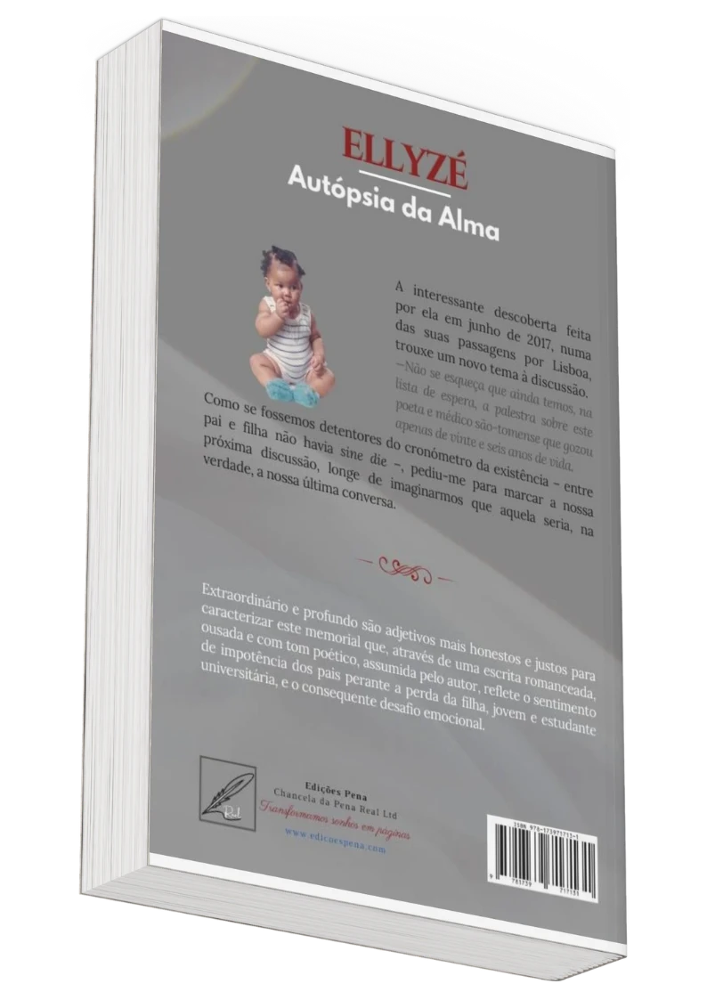

Tributo Literário
à Mémoria

Desafios da Perda
Ellyzé - Autópsia da alma" retrata a jornada difícil dos pais em França ao lidar com a morte da filha, ocorrida na distante Inglaterra.
Imaginação e Criação
Imaginação e Criação: A notícia repentina da morte da filha saudável, sem testemunhas, despertou a imaginação criativa do pai, resultando em uma narrativa provocadora e ousada.
Memória e Resiliência
O gesto de institucionalizar um troféu anual em memória da personagem destacou a resiliência necessária para superar a perda, inspirando outros a encontrar conforto na criação literária.